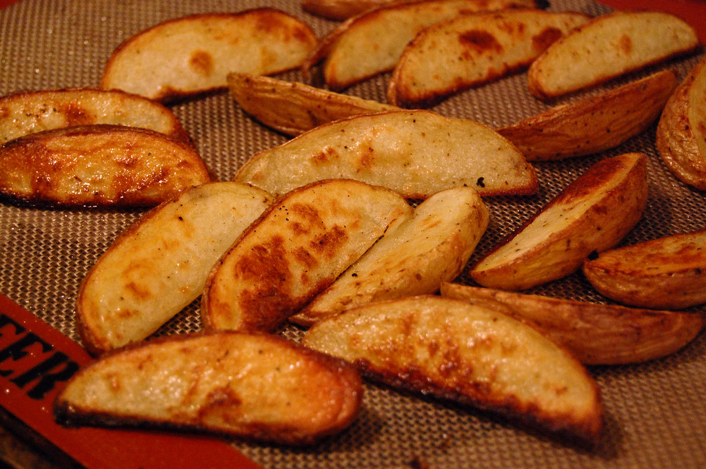

Home
Potato Wedges

Description
Potato wedges are a classic side dish that can be enjoyed by all ages. The only thing you need
is some potatoes, some seasoning, and a oven. With crispy golden brown exteriors
and soft fluffy interiors; potato wedges are truly the best. Recipe from noracooks.
Ingredients
- 4 russet potatoes or Yukon Gold potatoes
- 2 tbsp cooking oil
- 2 tsp garlic powder
- 2 tsp onion powder
- 1 tsp smoked paprika
- 1 tsp salt
Steps
- Preheat oven to 425°F. Lightly grease large baking pan with oil.
-
Clean potatoes. Slice potatoes in half lengthwise. Lay the half potatoes on the flat side, then cut in half, lengthwise.
Turn over potatoes. Cut through the center to get wedges.
- Put wedges into a large bowl. Mix wedges with the rest of the ingredients.
- Place coated wedges onto the baking pan. Bake for around 30 minutes, flip them once halfway through.
When they are golden brown and fork-tender they are done.